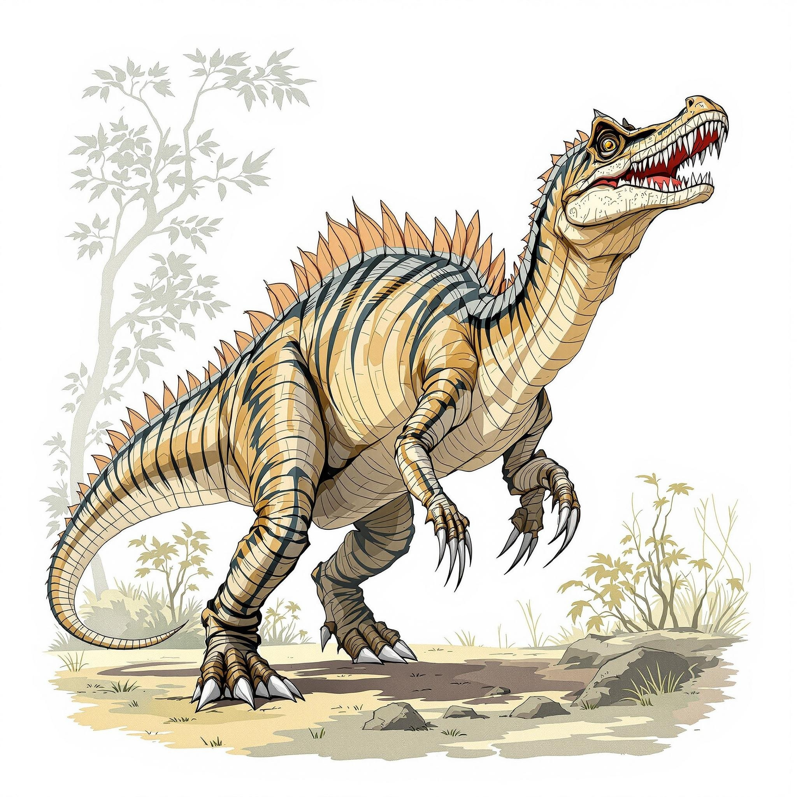
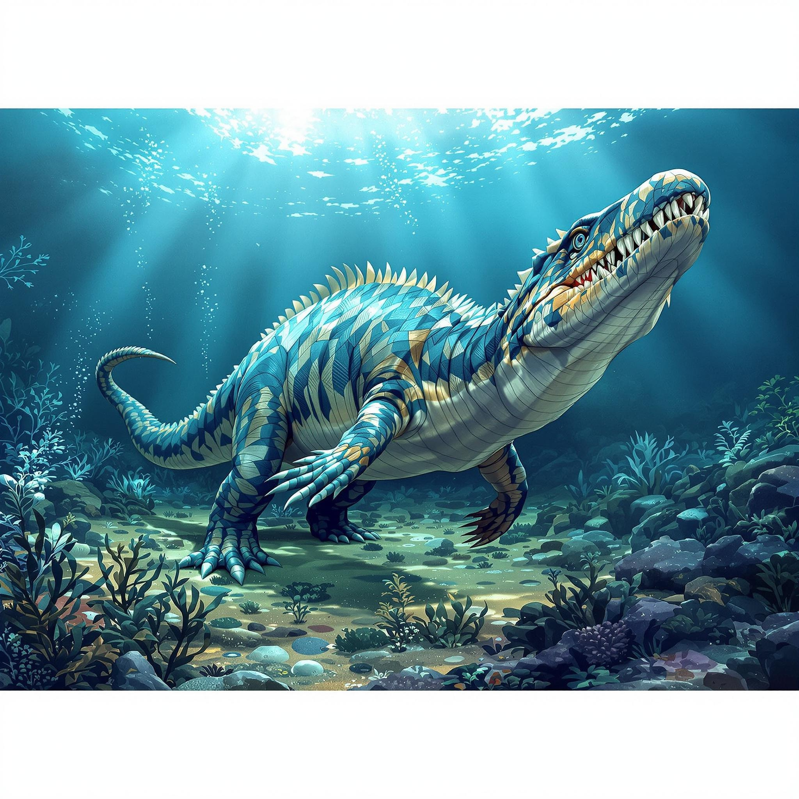
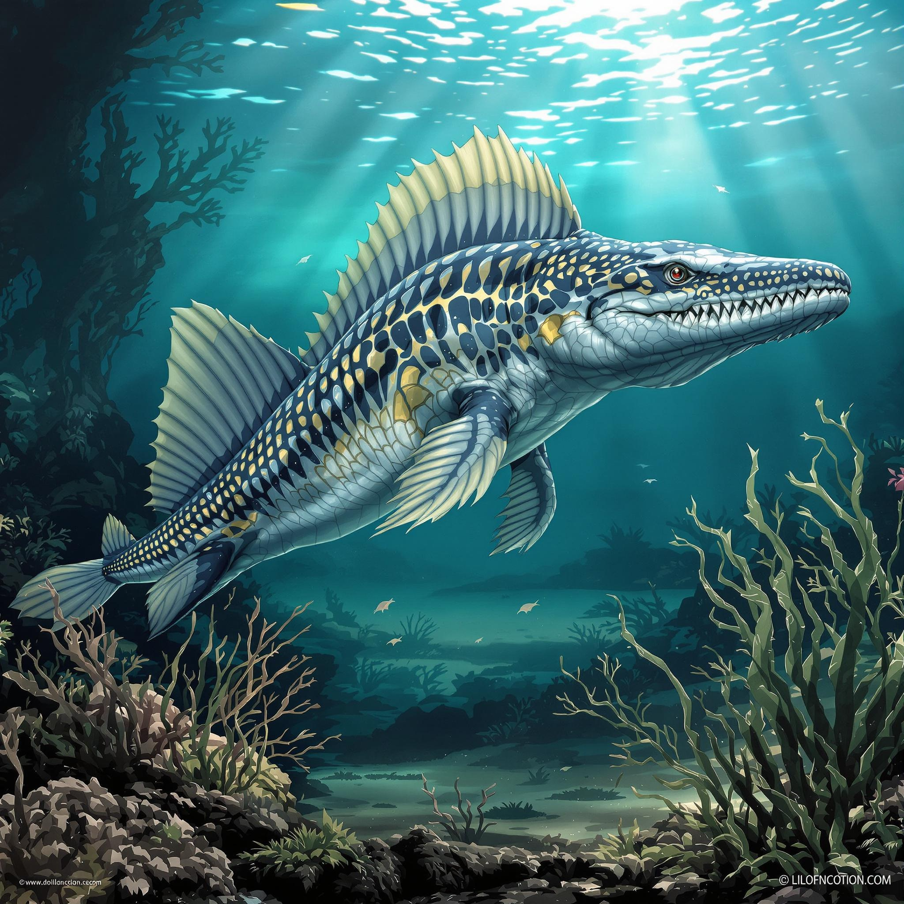

바다의 공포
고대 바다를 지배했던 해양 파충류들의 세계
해양 괴물들

모사사우루스
- 시대: 백악기 후기
- 크기: 길이 15-18m
- 무게: 15-20톤
- 특징: 거대한 턱과 이빨
백악기 바다의 최상위 포식자로, 현대의 대형 상어보다 더 큰 크기였습니다.
사냥 특성
- 강력한 턱과 날카로운 이빨
- 유선형 몸체로 빠른 수영
- 다양한 해양 생물 사냥

플레시오사우루스
- 시대: 쥐라기-백악기
- 크기: 길이 3-5m
- 특징: 매우 긴 목
- 서식지: 얕은 바다
긴 목과 작은 머리를 가진 해양 파충류로, 물고기를 주로 사냥했습니다.
생활 특성
- 지느러미로 변한 네 다리
- 유연한 목으로 사냥
- 얕은 바다에서 서식

익티오사우루스
- 시대: 트라이아스기-백악기
- 크기: 길이 2-4m
- 특징: 돌고래와 유사한 체형
- 서식지: 깊은 바다
현대의 돌고래와 매우 비슷한 모습을 가진 해양 파충류였습니다.
적응 특성
- 유선형 몸체로 빠른 수영
- 큰 눈으로 깊은 바다에서 사냥
- 새끼를 낳는 번식 방식

타이로사우루스
- 시대: 백악기 후기
- 크기: 길이 12m
- 무게: 8톤
- 특징: 거대한 턱과 이빨
모사사우루스과의 거대 해양 파충류로, 강력한 포식자였습니다.
사냥 특성
- 강력한 물림힘
- 빠른 수영 능력
- 깊은 바다 사냥
반수생 공룡들

스피노사우루스
- 시대: 백악기 중기
- 크기: 길이 15-18m
- 무게: 7-20톤
- 특징: 등의 돛과 수생 적응
최근 연구에 따르면 수중 생활에 매우 적응된 대형 육식공룡이었습니다.
수생 적응
- 물고기 사냥에 특화된 긴 주둥이
- 수영에 적합한 꼬리 구조
- 물속 생활을 위한 콧구멍 위치

바리오닉스
- 시대: 백악기 전기
- 크기: 길이 8.5m
- 무게: 1.7톤
- 특징: 악어와 유사한 주둥이
물고기를 주식으로 하는 특이한 육식공룡으로, 강가에서 주로 생활했습니다.
사냥 특성
- 물고기 잡이에 특화된 갈고리 발톱
- 긴 주둥이로 물속 사냥
- 반수생 생활방식
거대 해양 파충류

크로노사우루스
- 시대: 백악기 초기
- 크기: 길이 9-10m
- 무게: 8-10톤
- 특징: 거대한 머리와 강력한 턱
강력한 턱과 이빨을 가진 플리오사우루스과의 대형 해양 파충류입니다.
특이사항
- 2.7m 길이의 거대한 머리
- 30cm 길이의 이빨
- 강력한 수영 능력

리오플레우로돈
- 시대: 쥐라기 중기
- 크기: 길이 6-7m
- 무게: 2-3톤
- 특징: 강력한 턱과 날카로운 이빨
쥐라기 바다의 최상위 포식자 중 하나였던 해양 파충류입니다.
특이사항
- 발달된 후각 능력
- 빠른 수영 속도
- 강력한 물림력

엘라스모사우루스
- 시대: 백악기 후기
- 크기: 길이 14m
- 무게: 2톤
- 특징: 매우 긴 목 (71개의 목뼈)
가장 긴 목을 가진 해양 파충류로, 목의 길이가 전체 길이의 절반을 차지했습니다.
특이사항
- 유연한 목으로 사냥
- 작은 머리와 날카로운 이빨
- 지느러미로 변한 네 다리
중형 해양 파충류
익티오사우루스
- 시대: 트라이아스기-쥐라기
- 크기: 길이 2-3m
- 무게: 200-300kg
- 특징: 돌고래와 비슷한 체형
현대의 돌고래와 매우 비슷한 체형을 가진 해양 파충류입니다.
특이사항
- 발달된 눈
- 유선형 몸체
- 새끼를 낳는 번식 방식